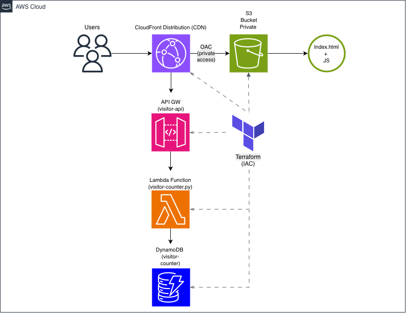

AWS Cloud Portfolio Project demonstrating serverless architecture, Infrastructure as Code with Terraform, and AWS cloud services.
View GitHub Repository View LinkedInThis portfolio website was built to demonstrate hands-on AWS cloud engineering skills. The frontend is served through Amazon CloudFront from a private S3 bucket, while a serverless backend updates the visitor counter using AWS Lambda and DynamoDB.
All infrastructure is provisioned using Terraform to demonstrate Infrastructure as Code and reproducible cloud deployments.
The diagram below shows the high-level architecture used in this project. CloudFront securely delivers the static site from a private S3 bucket while AWS Lambda retrieves and updates the visitor count stored in DynamoDB. All infrastructure resources are created and managed using Terraform.

High-level architecture for the AWS Cloud Portfolio Project